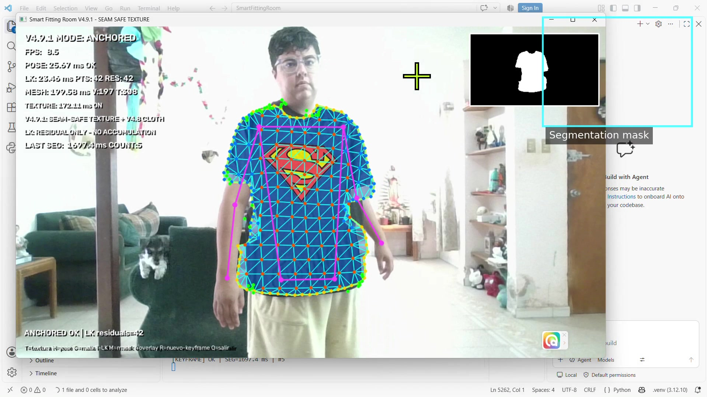
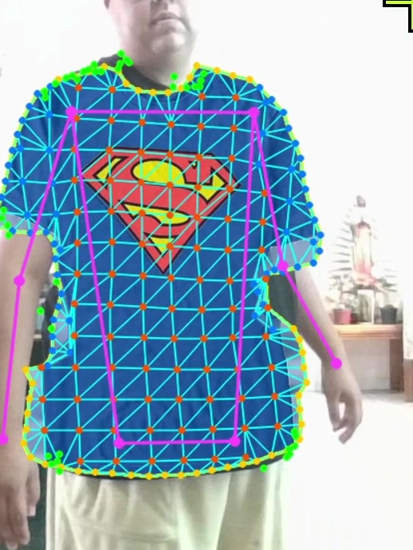
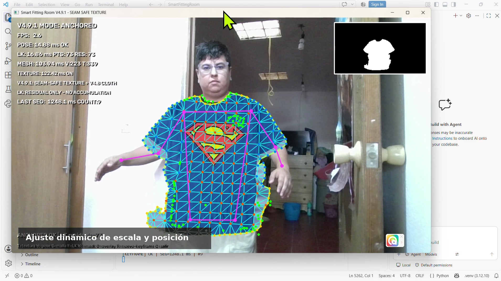
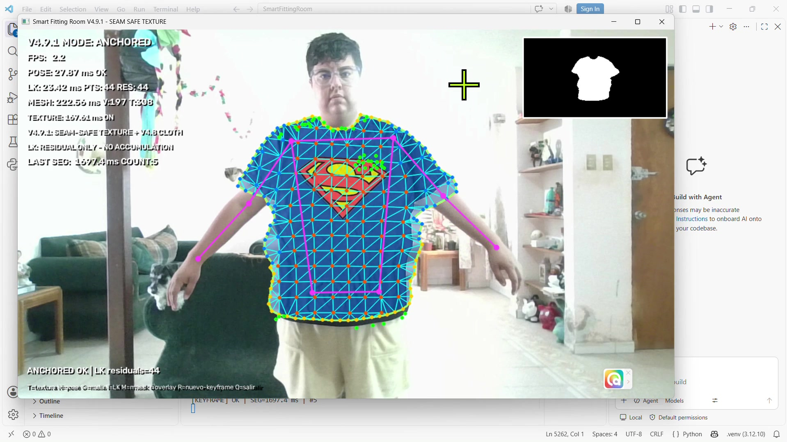

Smart Virtual
Fitting Room
Exploring how computer vision can turn a live camera feed into an interactive garment visualization experience.
See the garment.
Explore the interaction.
This prototype overlays a garment image on live camera footage and explores how its position and scale can be adjusted to the person in the frame.
My contribution
I am developing the application and exploring its image processing, garment placement, and visual alignment behavior.
The project brings together software development and computer vision in a practical, visually demonstrable application.
Video demonstrations
Two perspectives on the experience: the overall interaction and a closer look at garment alignment.
Technologies and their roles
Python
Application logic and computer vision experimentation. Its ecosystem makes it practical to iterate on image processing and connect the different stages of the prototype.
OpenCV
Camera capture and image manipulation. It provides tools for resizing images, transforming coordinates, and composing the visual output.
Why these image processing techniques?
The following explains the design principles relevant to garment overlays. It is an overview of the approach, rather than a verified inventory of every algorithm in the current source code.
| Technique | Purpose | Why it is useful |
|---|---|---|
| Frame-by-frame processing | Update the camera view and garment visualization. | It allows the rendered result to respond to movement instead of displaying a single static composition. |
| Geometric placement and scaling | Map garment position and dimensions into image coordinates. | A garment needs to move and resize with the visible body region. This provides a baseline for alignment. |
| Transparency masking and alpha compositing | Combine the garment with the camera image. | When a garment asset has transparency, its background can be excluded and partial transparency can produce cleaner edges. |
Accurate sizing, realistic fabric deformation, and body occlusion require additional modeling and validation. A visual overlay alone does not establish physical garment fit.
From camera to visualization
Camera frame
Receive a live image.
Placement
Determine position and target size.
Garment overlay
Transform and combine the images.
Visual feedback
Show the result and repeat.
Project gallery
Live camera interface, garment visualization, dynamic alignment, and prototype output.




Areas to evaluate
Alignment stability during movement, behavior across different body proportions, and visual quality under changing camera and lighting conditions.
Explore more of my work
Software engineering, computer vision, and interactive applications.
← Back to portfolio GitHub profile ↗